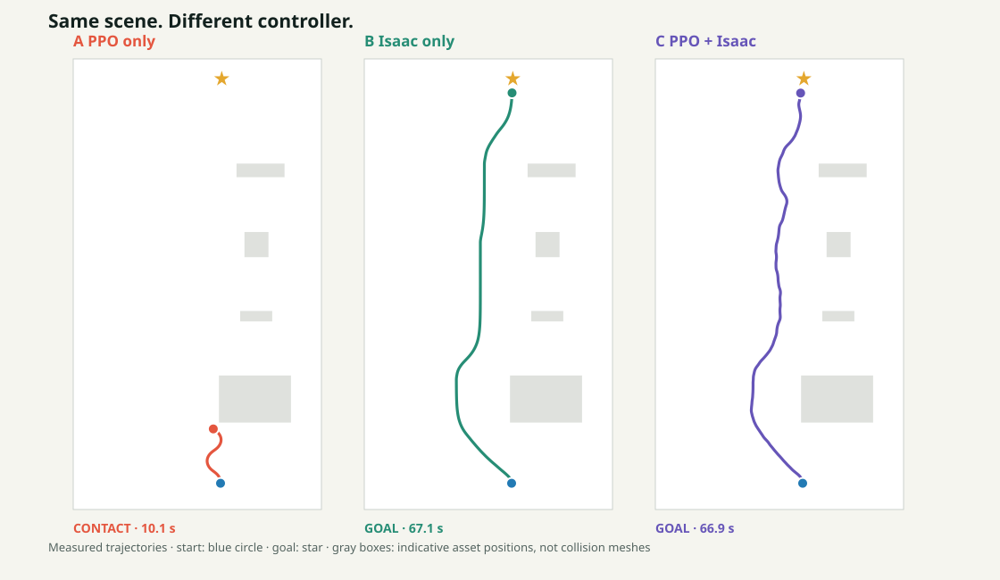
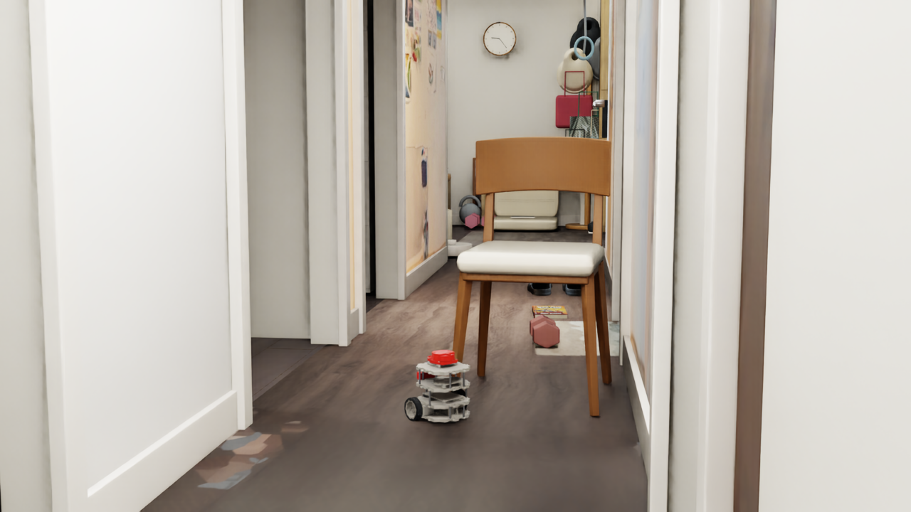

DEVLOG · 2026.09.26 · POLICY TRANSFER
PPO 到底有没有
在开车？
机器人到达终点，不代表强化学习起了作用。我把 PPO 接入 Isaac Sim 后，分别测试它独立驾驶、原路线控制器驾驶，以及两者共同控制；记录谁真正执行了动作，再比较轨迹、时间和接触。
01 / CONTEXT
先接通模型，再问它能不能独立通行。
上一轮走廊实验中，我根据失败轨迹检查地垫与通行余量。移除凸起地垫、把中心最小通行距离调为 14 cm 后，Isaac 的深度相机 + LiDAR + A* 控制器在八组预留通道布局中全部到达目标。此前的观察和十组测试仍单独保留。
这次接入的是在另一套 Gazebo 场景训练的 clean-start PPO Actor。它吃进 78 维观测：36 个 LiDAR 扇区距离、36 个时间变化量、上一步执行动作和 4 个目标信息。模型已能加载并给车轮发指令，但训练时的开阔障碍布局与这里的狭窄走廊不同；原始 PPO 也没有直接获得深度相机看到的低矮物体。
最初沿用 Gazebo 项目的安全层，短测中的 23 次动作全被覆盖。改为让 PPO 直接控制后，5 秒能前进；延长到 20 秒，它在第一把椅子前触发 32 cm 距离停车，31 次直接控制后连续 64 次停车。换回按方向判断的原安全层，20 秒内又出现 44 次侧向禁止转动；单独允许原地转向的 30 秒试验也没通过第一把椅子。这些失败说明安全层与走廊几何不匹配，不能直接判定 PPO 本身完全不会开车。
另一个感知限制：在书本的独立静态测试中，约 2 cm 厚的书在自身区域没有 LiDAR 返回，深度相机却检测到 2,292 个高于地面 12 mm 的像素。试验性融合把书本方向的测距从 1.56 m 改为 0.75 m；这项融合尚未用于下面的 PPO 行驶测试。查看感知记录
02 / THE GUARD
把 Isaac 已验证的通行判断放回控制链。
我提出一个更直接的问题：既然 Isaac 已用深度与 LiDAR 建立 2.5 cm 网格，并用 14 cm 车身包络规划通路，为什么还要让 Gazebo 的固定距离规则决定这条走廊能否转弯？于是保留 PPO 提议的动作，但由 Isaac 地图判断接下来约 0.8 秒的轨迹净空，并检查转向是否与局部 A* 路线相差超过 25°。不符合时，原 Isaac 路线控制器接管。
限速与原测试一致：线速度不超过 0.065 m/s，角速度绝对值不超过 0.55 rad/s。第一组通行测试在 66.9 秒到达目标：334 次决策中，272 次执行了 PPO 动作，62 次由 Isaac 路线接管，接触力采样为 0。故意完全堵路的第九组在 34.3 秒因无进展停止，也未采样到接触。
272/334 = 81.4% 说明 PPO 并非只坐在副驾驶；但“执行过动作”仍不等于“提供了净收益”。而且这 62 次接管全部来自路线方向分歧，短时净空检查单独没有拒绝动作。要回答它是否有用，还得做同场景对照。
03 / A–B–C TEST
同一条路，分别让谁来开？
固定随机种子 2026092601、障碍布局、起点、目标与速度上限。A 只有 PPO 和碰撞后停测监控；B 只有 Isaac 深度 + LiDAR 地图与 A*；C 是 PPO 提议、Isaac 审核与必要时接管。A 的输入仅有 LiDAR，B 与 C 的地图还使用深度，因此这是实际控制系统配置的对比，不是等传感器条件下的算法排名。
| 控制方式 | 结果 | 停止时间 | 实测路径 | 最大采样接触力分量 | 实际控制次数 |
|---|---|---|---|---|---|
| A · PPO-only | 首把椅子附近接触，停测 | 10.1 s | 0.579 m | 0.928 N | 48 次 PPO |
| B · Isaac-only | 到达目标 | 67.1 s | 3.877 m | 0 N | 335 次 Isaac |
| C · Hybrid | 到达目标 | 66.9 s | 3.878 m | 0 N | 272 次 PPO + 62 次 Isaac |

蓝点是起点，星号是目标，线尾是停止位置。灰框只示意资产中心和大致占地，不代表精确碰撞网格。

PPO-only 在首把椅子前的停止画面。接触对象依据位置推测在椅子区域；当前记录只保存了接触力总量，没有逐碰撞体归因。
混合控制中，PPO 动作累计执行约 54.2 秒、对应约 3.17 m 的实测行程；这些数字说明动作归属，不能直接当成 PPO 带来的额外收益。它请求的前进速度在本次每一步都超过共同的 0.065 m/s 上限，最终全部被限速；PPO 真正改变的是转向。在允许 PPO 执行的时刻，它的角速度与 A* 路线指令平均相差约 0.24 rad/s。
04 / WHAT THIS MEANS
开了大部分路，不等于开得更好。
PPO-only 在这组走廊里不能独立安全到达；混合控制安全到达，说明 Isaac 的地图和路线约束发挥了关键作用。混合控制只比纯 Isaac 快 0.2 秒，路径几乎一样长，不能据此声称 PPO 提升了效率。更准确的结论是：PPO 确实参与转向，但目前没有测出优于现有 A* 控制器的价值。
本页是一个随机种子的三组对照，不是全面的策略评测。零接触力是离散采样结果，不构成连续时间的安全证明；书本的深度信息也尚未进入 Actor 观测。下一步应在更多固定种子与困难布局上重复 A/B/C，并单独报告 PPO 接管比例、碰撞、时间和路径长度。若仍无优势，就如实把纯 Isaac 控制器作为更合适的工作方案。